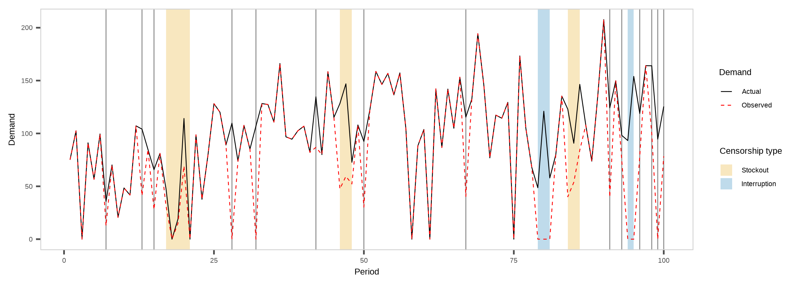
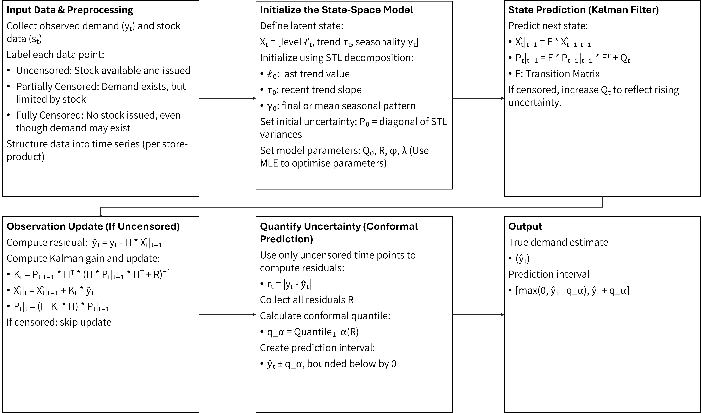
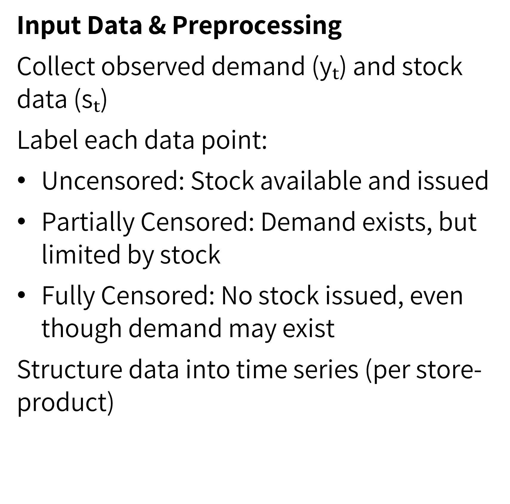
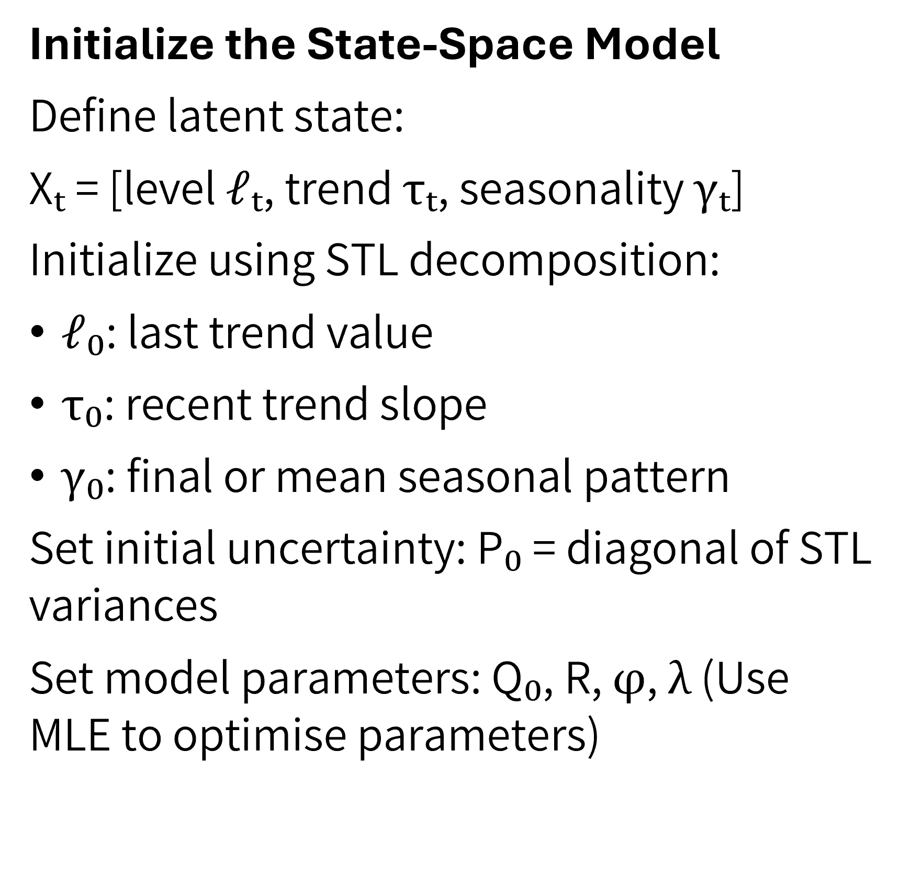
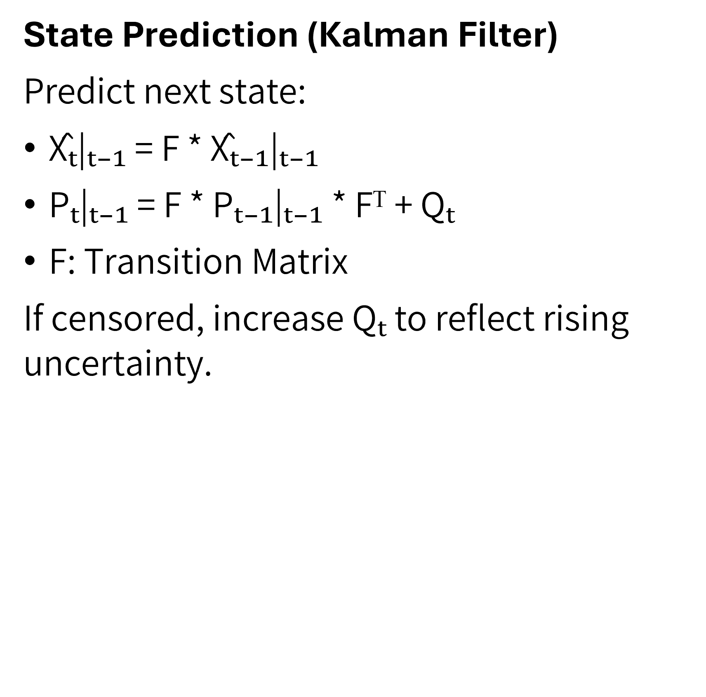
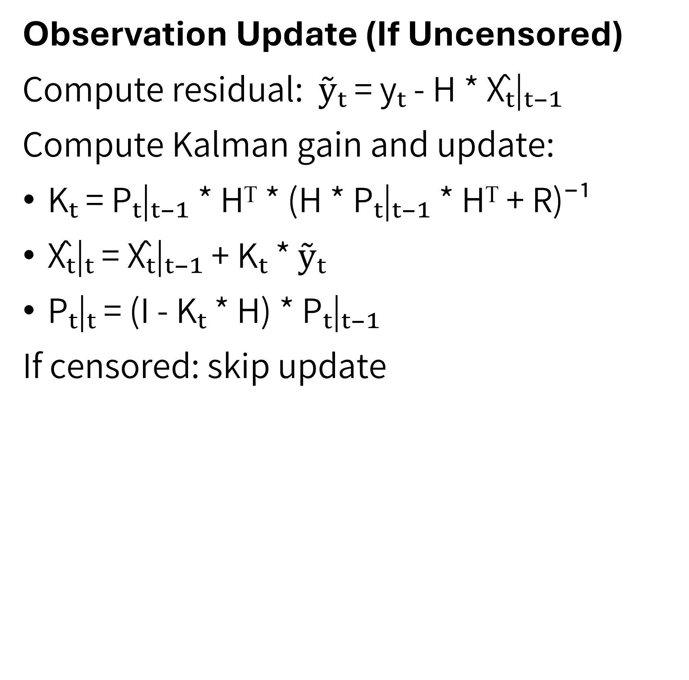
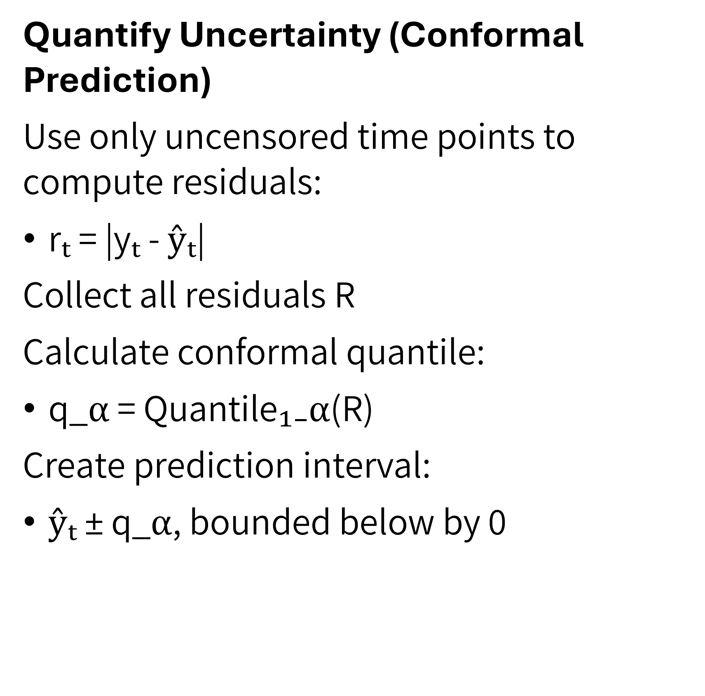
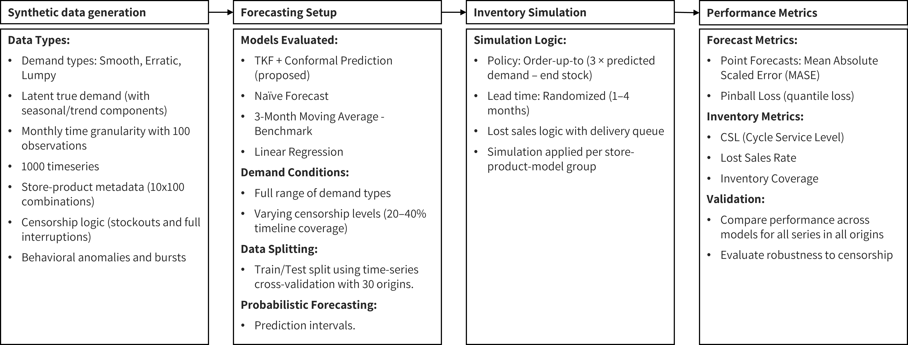
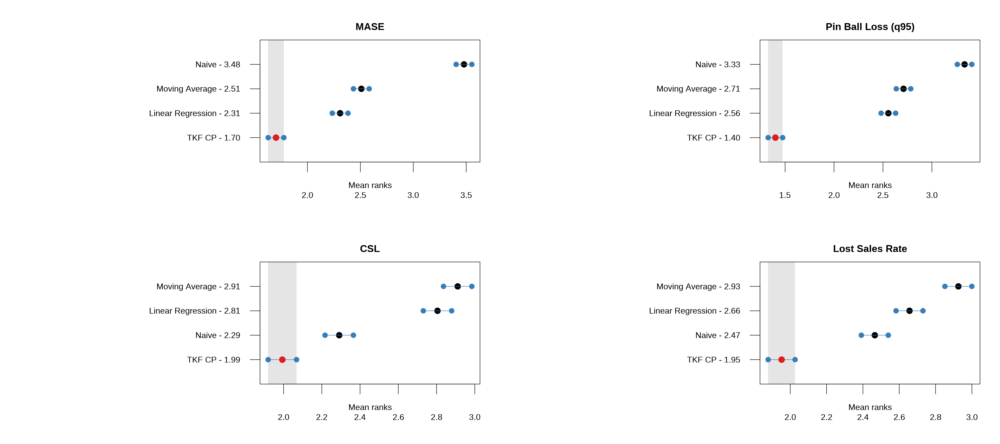

like Nilu still have an unmet need for family planning.
Ultimately, this results in dropouts, unwanted pregnancies, and almost 7 million hospitalizations each year in developing countries.
Why this is critical
Frequent stockouts are common in family planning supply chains, especially in developing countries, significantly impacting public health outcomes.
During my recent field visit to Ethiopia, stockouts were repeatedly identified by demand planners as a major barrier to effective contraceptive supply management.
Traditional forecasting methods fail under censorship.
Prior research inadequately addresses demand estimation under conditions of frequent stockouts and interruptions, often leading to biased forecasts and suboptimal inventory decisions.
The fundamental question
Key definitions
Stockouts: Periods when demand is higher than available inventory, leading to censored observations of demand.
Interruptions: Periods when no products are issued despite available stock, thus artificially recorded as zero demand.
Censored Demand: Demand occurring during periods when products are unavailable (stockouts or interruptions), thus not fully observable.
True Demand: Actual demand that would have occurred if sufficient stock was available or no interruptions happened.
Censorship scenarios
How can a demand forecasting and inventory optimization model that incorporates lost sales estimation and contextual field data enhance contraceptive supply chain performance and reduce stockouts in developing countries?

Figure 1: Censorship scenarios in family planning supply chains.
What we are going to do
How we can fill the gaps
RQ1: How accurately can a Tobit Kalman Filter with conformal prediction estimate true demand under censorship?
RQ2: How does demand reconstruction improve inventory performance compared to baseline planning methods?
RQ3: How do planners adjust their orders in response to proposed model-generated recommendations?
Our proposed framework
First stage: estimating true demand under censorship using tobit kalman filtering and conformal prediction

First stage: estimating true demand under censorship using tobit kalman filtering and conformal prediction





Numerical experiment
Experiment setup

Synthetic data exploration - example
Actual vs. observed demand for one representative series per type × category, with disruptions and censoring shaded.
What did we find?
Overall forecasting and inventory performance across models
Method
MASE (mean)
Pin Ball Loss - q95 (mean)
CSL (mean)
Lost Sales Rate (mean)
Inventory Coverage (mean)
TKF CP
0.87
47.61
0.86
0.14
5.25
Moving Average
1.06
72.65
0.82
0.18
19.6
Linear Regression
1.08
73.86
0.82
0.16
2.55
Naive
1.21
78.89
0.84
0.16
123.38
Performance evaluation - Nemenyi test

Figure 2: Average ranks of forecasting methods with 95% confidence intervals based on the Nemenyi test for all metrics. Lower ranks indicate better performance.
Performance evaluation - forecasting
Figure 3: Forecasting metrics for each series type for the different forecasting methods.
Performance evaluation - inventory
Figure 4: Inentory metrics for each series type for the different forecasting methods.
What’s NEXT
Way forward
Develop a quantile-based inventory policy → Incorporate uncertainty directly into order decisions
Extend empirical model with external covariates → Account for special events, disruptions, and policy shifts
Conduct lab experiment with real demand planners → Measure how model recommendations affect decision-making